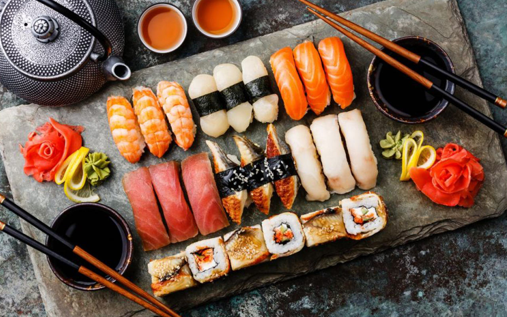
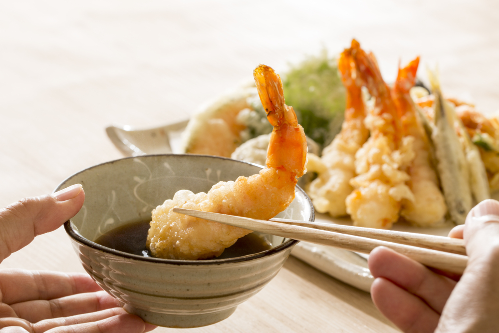
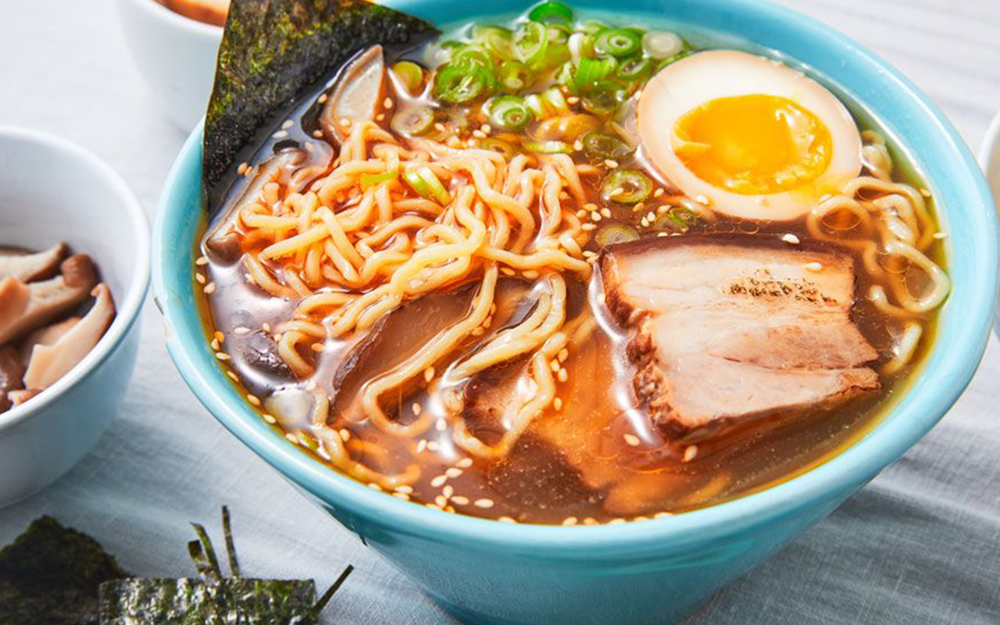

Gastronomía de Japón
RECETA DEL MES JAPÓN
Sushi

Ingredientes del sushi
Para el arroz:
400 g de arroz para sushi
440 ml de agua
1 trozo de alga kombu (opcional)
30 g de azúcar
12 g de sal
60 ml de vinagre de arroz
Para el relleno:
Pasta de wasabi
120 g de lomo salmón (80 g para nigiri y 40 g para maki)
80 g de lomo de dorada
80 g de unagi (anguila a la parrilla)
4 langostinos o gambones cocidos
2 láminas de alga nori
1 trozo de aguacate
1 trozo de pepino
Jengibre encurtido
Salsa de soja
Preparación del relleno de los Rollitos de Primavera
La preparación del sushi comienza por la cocción del arroz. Para ello, lo primero que debemos hacer es lavar 400 g de arroz
de una variedad especial para sushi para que suelte el almidón. Lo ponemos en un bol, lo cubrimos con agua y lo frotamos bien.
Veremos que el agua se vuelve blanquecina por el almidón. Escurrimos el arroz, renovamos el agua y repetimos el proceso de
3 a 5 veces hasta que salga limpia.
Una vez lavado el arroz, lo dejamos reposar en el colado por 1 hora más o menos para que vaya absorbiendo humedad.
Pasado el tiempo de reposo, colocamos el arroz en una olla o cazo y lo cubrimos con 440 ml de agua. Aquí la cantidad de agua es importante y conviene respetarla. Como regla general se añade un 10 % más del peso del arroz. También podemos añadir 1 trozo de alga kombu que dará sabor, aunque esto es totalmente opcional.
Ahora tapamos el arroz y lo llevamos al fuego. Calentamos a fuego medio durante unos 7 minutos. Luego, bajamos el fuego y dejamos que se cueza con el vapor generado durante otros 7 minutos más. Por último, el arroz necesita unos 10 minutos de reposo para que quede en su punto. Es importante durante todo el proceso mantener tapado el arroz y no quitar la tapa nunca, ya que lo que se busca es mantener todo el vapor dentro, que será lo que cueza el arroz.
En cuanto el arroz haya reposado, ya lo podemos destapar y acto seguido lo transferimos a un bol.
Normalmente este bol está hecho de bambú que ayuda a absorber la humedad sobrante en su justa cantidad, pero al hacerlo en casa podemos permitirnos usar el bol que tengamos. Añadimos el aliño consistente en 30 g de azúcar y 12 g de sal disueltos en 60 ml de vinagre de arroz y mezclamos con cuidado para que se integre bien. Si podemos, al mismo tiempo que removemos, podemos abanicar el arroz para acelerar el proceso de enfriado.
Cómo hacer los nigiri
Vamos con los nigiri. Con las manos humedecidas en agua hacemos 16 croquetas de arroz de entre 20 a 25 g cada una y un poco aplanadas.
Untamos encima con el dedo una pizca de wasabi y colocamos el corte de pescado.
Hemos usado 80 g de lomo de salmón (cortado en 4 rodajas rectangulares),
80 g de lomo de dorada (en rodajas cortadas en diagonal y con el cuchillo inclinado),
80 g de anguila (en 4 trozos) y 4 langostinos cocidos (pelados, con la cola y abiertos por la mitad).
Estos dos últimos los sujetamos con tiras de alga.
Cómo hacer los maki
Para hacer los maki vamos a necesitar 1 lámina de alga nori entera y media para el hosomaki. La forma de proceder en ambos casos es la misma.
Colocamos el alga en la esterilla y distribuimos una fina capa de arroz (unos 120 g para la versión normal y 60 g para el hosomaki),
dejando de 1 a 2 cm libres hasta el borde. Untamos una raya de wasabi en el centro del arroz y colocamos el relleno.
Hemos hecho 2 tipos de maki, uno con 40 g de salmón cortado en bastones y un trozo de aguacate en tiras y el delgado, el hosomaki, con 1 tira de pepino.
Para enrollarlo, sujetamos la parte trasera de la esterilla con los pulgares, con los dedos sujetamos el relleno para que no se mueva y juntamos los dos bordes superior e inferior de arroz. Apretamos bien, lo hacemos rodar un poco para terminar de darle forma y por último humedecemos el borde para que no se despegue.
Para terminar, cortamos los maki en 8 porciones iguales. Lo más fácil es utilizar un cuchillo muy afilado para cortar primero por la mitad, luego cada mitad por la mitad y así hasta tener los 8 trozos. Y ya podemos servir todo el sushi con jengibre encurtido, wasabi y salsa de soja.
Audio Japón
Algunos platos típicos de Japón
Tempura

En el siglo XVI, los misioneros jesuitas portugueses desembarcaron en Nagasaki e introdujeron en Japón el revolucionario
método de freír la comida. Los japoneses lo adoptaron y empezaron a freír marisco y verduras, que primero recubrían con una
masa ligera. Este oishii o aperitivo es perfecto para acompañarlo con arroz, noodles o para una carne asada.
Ramen

Esta sopa de noodles es uno de los platos más populares y baratos de Japón, así que tiene sentido que también sea el favorito de
los estudiantes universitarios. El ramen de noodles es tan simple de hacer como delicioso: usa fideos de trigo, como los chinos
(son amarillentos y se parecen un poco a los espaguetis), ponlos en caldo y echa encima rodajas de carne, algas deshidratadas y
cebolla verde. Mucha gente come ramen en el almuerzo, y en Japón se considera comida rápida. Sin embargo, muchos restaurantes tienen
su propia receta secreta, así que la experiencia puede ser única (umami) cada vez.